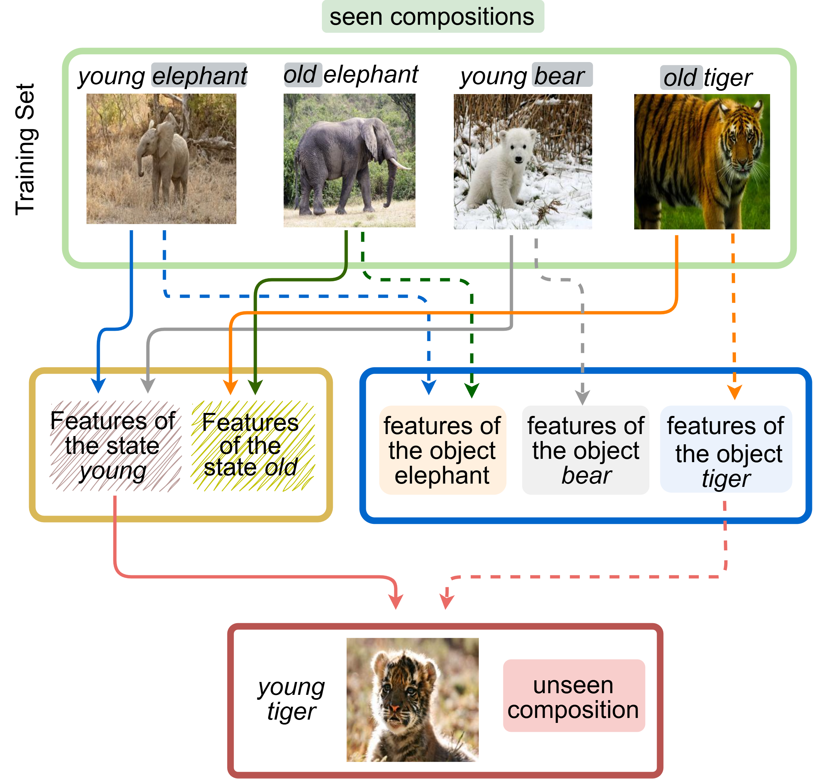

Partially Supervised Compositional Zero-Shot Learning by Class-Balanced Distribution Alignment
IEEE Transactions on Image Processings, 2026
In this work, we attempt to address the partially supervised Compositional Zero-Shot Learning (pCZSL) problem that requires to recognize unseen state–object combinations when each training image has either the state or the object label for an input image.